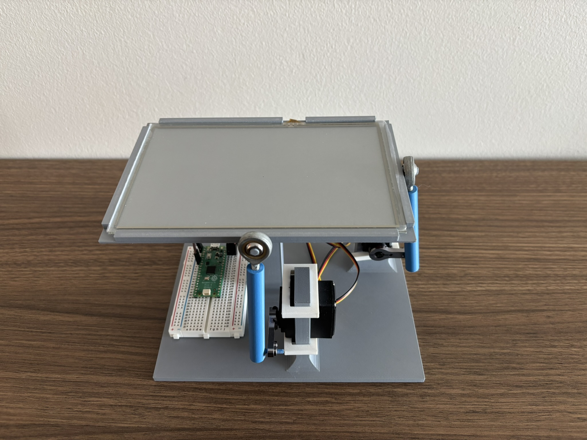
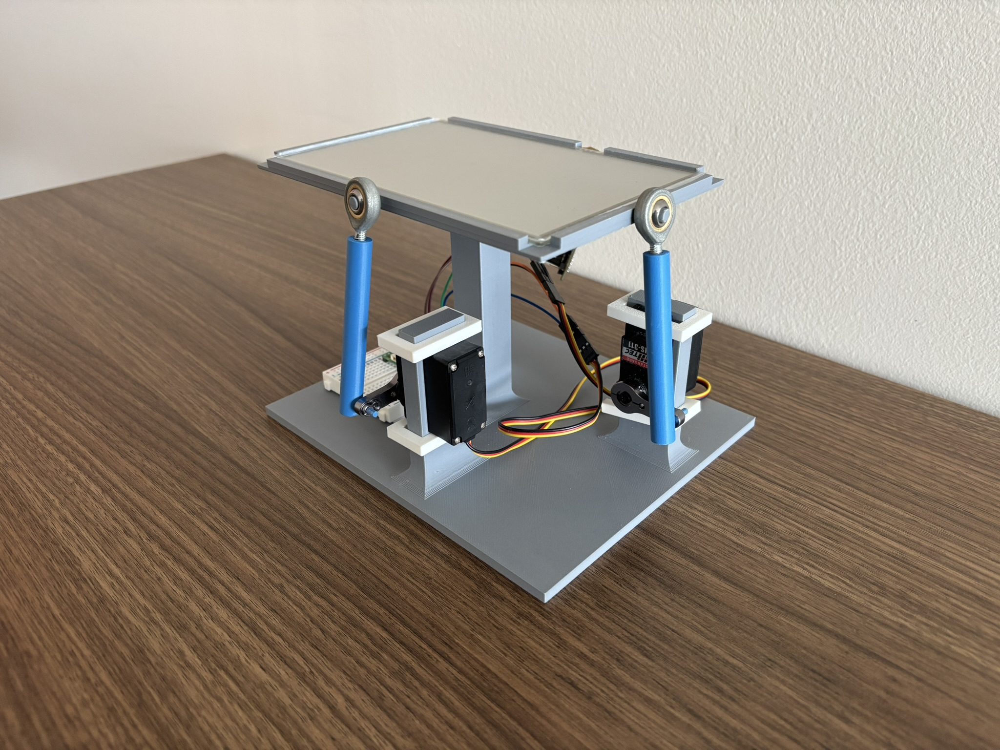
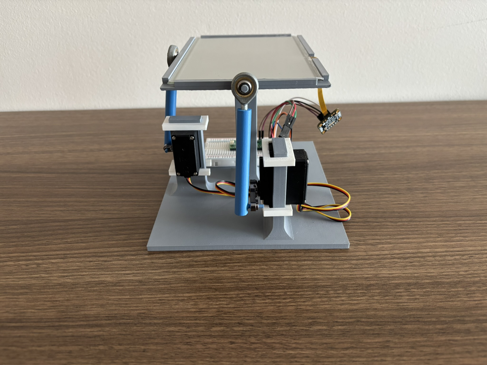

This project focused on the design and integration of a servo-actuated balancing platform intended to keep a ball centered through active control. The system combined mechanical design in SolidWorks with a Raspberry Pi Pico, two servos, and real-time control logic. The final result demonstrates the completed platform and its ability to balance the ball through sensor feedback and coordinated servo motion.
The completed platform was designed to actively adjust its orientation using two servos in order to keep the ball balanced near the center of the plate. This project combined mechanical design, hardware integration, and control implementation into a working electromechanical system. The final build highlights the physical platform layout, servo arrangement, and overall system assembly.



The video below shows the final platform in operation. In this demonstration, the system responds to the ball’s movement by adjusting the platform angle in real time, allowing the ball to be stabilized through closed-loop control. This final demonstration reflects the successful integration of the mechanical design, electronics, and control strategy.
This project strengthened my experience in mechatronics, SolidWorks design, and hardware troubleshooting. It also reinforced the importance of integration, since the final system depended not only on the mechanical structure, but also on the wiring, servo response, and real-time control behavior working together correctly.